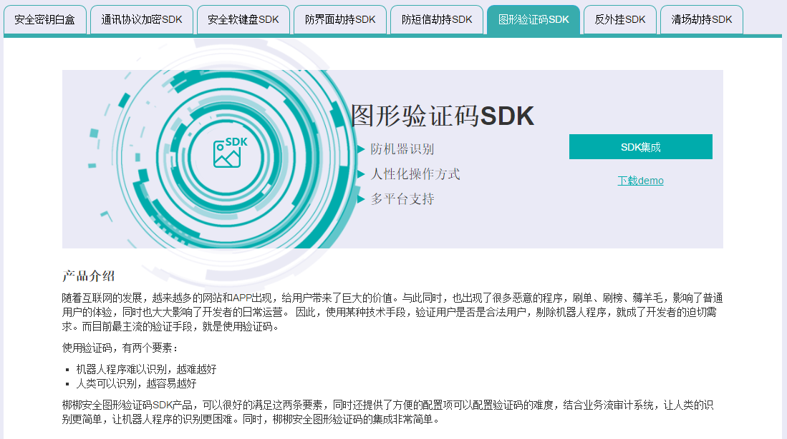

第1章 产品介绍
介绍
本章总体介绍移动安全服务平台和所需的部署环境，内容包括：
- 产品概述
- 产品部署
产品概述
移动互联网的发展，智能终端的发展对企业各项业务发展也带来了深远的影响。企业对用户提供的服务和业务的不同渠道形态中，移动端已经从一个补充性的渠道发展为主体渠道。移动端完全复制了其他业务渠道的功能，甚至由于移动端天生的便利性，很多业务移动端成为唯一渠道。移动端的安全风险也随着发展日益严重。
移动业务面临的安全风险可分为移动端应用自身安全和黑色产业两个方面，以移动端病毒木马、漏洞、盗版应用等形态承载的移动端应用威胁，主要包括：通过移动端篡改内容、获取用户敏感信息、二次打包插入广告、二次打包植入木马、窃取账户，以及通过移动端入侵服务器等危害：而黑色产业呈现产业化、分工化、规模化、流程化等特点。包含欺诈交易、虚假营销欺诈，“羊毛党”，大数据黑产等。黑产背后一般有一个完整的产业链从业群体支撑，黑产技术往往是一整套组合技术，有针对性、迭代快，企业面对这类威胁时，又使传统移动端安全防范手段失效。
移动安全服务平台对移动应用的设计、研发，以及发布阶段所涉及的各种安全需求解决方案进行整合，使界面统一化、认证统一化，并且在深度研究金融行业用户的业务特性基础上，进行业务强耦合的流程设计，使产品更贴切用户业务需求。同时，结合梆梆移动安全指数，定制化每一个用户的专属安全基线，从而为用户提供更客观移动端安全解决方案。
另外，移动安全服务平台在移动应用的运营阶段，为用户提供数据采集、威胁感知，及渠道监测等运营安全监控能力。更有效的应对包含欺诈交易、虚假营销欺诈、“羊毛党”等黑色产业所带来的移动安全隐患。
产品部署
移动安全服务平台部署灵活，由平台自身系统设备和用户根据需要配套的功能模块设备组成。移动安全服务平台支持公有云和私有云的方式部署，针对于私有云部署方式，其所需的服务器硬件配置及操作系统要求，详细如下表所示：
| 项目 | 规格 | 说明 |
|---|---|---|
| 操作系统 | Ubuntu | 14.04 |
| 处理器 | 8核(最低) | 需支持硬件虚拟化VT-X |
| 内存 | 16GB | |
| 硬盘 | 2TBytes | |
| 网络接口 | 1000baseT |
注意事项：
- 上述为移动安全服务平台的服务器配置及系统要求，对于平台所集成的部分功能，需参照对应服务能力所需单点产品的配置需求。
第2章 访问移动安全服务平台
介绍
本章主要介绍移动安全服务平台服务器的访问方式，以及Web管理页面的说明，帮助管理员初步了解移动安全服务平台，包括：
- 访问移动安全服务平台
- 移动安全服务平台Web管理页面说明
访问移动安全服务平台
为移动安全服务平台配置IP地址后，在PC（与移动安全服务平台网络连通）的浏览器上输入http://移动安全服务平台IP地址/，在登录界面中输入用户户、密码以及验证码，输入完成后点击【登录】按钮登录系统。如下图所示：
图 3–1：登录页面
移动安全服务平台Web管理页面说明
移动安全服务平台页面布局如下图所示：
图 3–2：页面布局
下表为图中各部分说明：
| 编号 | 说明 |
|---|---|
| A | 系统菜单栏。显示登录用户信息。 |
| B | 导航栏。显示页面导航路径，点击导航栏节点，页面可跳转到对应的页面。 |
| C | 主窗口。显示当前页面的主要信息。 |
表 3–1：导航栏菜单选项说明
系统菜单
系统菜单说明如下表所示：
| 选项 | 说明 |
|---|---|
| 用户信息 | 显示登录用户信息，提供修改信息功能 |
| 梆梆响应服务 | 提供梆梆响应服务，可以向梆梆服务邮箱反馈使用问题。 |
| 产品帮助文档 | 提供产品帮助文档。 |
| 退出 | 退出系统。 |
表 3–2：系统菜单说明
导航栏
导航栏提供移动安全服务平台的页面导航菜单项，具体说明如下：
| 菜单项 | 说明 |
|---|---|
| 安全开发 |
提供应用安全相关功能，包括：
|
| 威胁感知 | 梆梆安全移动威胁感知系统通过对移动终端威胁数据的深入挖掘和分析，向用户提供相关威胁情报信息，同时也能够对威胁源进行精准定位和控制。 |
| 策略配置 | 提供加固策略配置功能。 |
| 配置管理 | 提供系统配置功能，包括：
|
表 3–3：导航栏说明
第3章 安全开发规范
介绍
本章对移动应用在设计、开发阶段，以及发布前的加固阶段，平台所提供的服务及工具，进行基于产品操作的详细说明，帮助用户在移动应用设计、开发、以及发布前阶段完成相应的安全开发工作，主要内容包括：
- 安全规范
- 安全加固
- 安全组件
安全规范
基于应用创建时提交的相关信息，由梆梆移动安全服务平台，基于梆梆多年移动安全经验积累，及技术沉淀，设计的规则算法，自动化生成此应用安全开发规范文档，服务于应用开发阶段。
点击菜单“安全开发”下的“安全规范”选项进入安全开发规范页面，如下图所示：
图 4–1：安全开发规范页面
用户可以新建应用并生成应用安全开发规范，并可以给应用开发者邮箱发送通知邮件。
安全开发规范列表各列信息说明如下：
| 选项 | 说明 |
|---|---|
| 应用名称 | 显示应用程序名称。 |
| 创建时间 | 显示应用创建时间。 |
| 最新版本 | 显示应用最新版本号。 |
| 开发者 | 显示应用开发者。 |
| 安全开发规范 | 显示已生成安全开发规范的数目，点击跳转到“应用管理”页面。 |
| 管理操作 | 提供应用管理和邮件通知功能。 |
表 4–1：安全开发规范列表说明
新建应用：点击页面上方“新建应用”按钮，弹出“新建应用”窗口，如下图所示。在文档框中填入相应内容，单击“创建”按钮，完成新建。
图 4–2：新建应用窗口
删除应用：选中应用名称前的复选框（单选或多选）或表头第一列的复选框（全选），点击页面右下方的”删除应用“，在弹出的对话框中点击”确定“，完成删除。
邮件通知：点击“管理操作”列中“通知”，弹出“邮件通知”对话框，在文本框中输入相应的内容，点击“发送”按钮，发送通知，点击“取消”按钮，取消发送并关闭“邮件通知”对话框。
安全开发规范列表支持按应用名称的关键字进行模糊搜索。
应用管理
点击“管理操作”列中“管理”，进入应用管理页面，如下图所示：
图 4–3：应用管理窗口
应用基础信息各项说明如下：
| 选项 | 说明 |
|---|---|
| 应用名称 | 显示应用程序名称。 |
| 开发者 | 显应用开发者。 |
| 联系电话 | 显示联系人联系电话。 |
| 联系人 | 显示应用联系人。 |
| 联系邮箱 | 显示联系人联系邮箱。 |
| 更新信息 | 点击保存更新信息。 |
表 4–2：应用基础信息说明
应用管理列表各列信息说明如下：
| 选项 | 说明 |
|---|---|
| 应用名称 | 显示应用程序名称。 |
| 应用环境 | 显示应用适配系统。 |
| 创建时间 | 显示应用创建时间。 |
| 版本 | 显示应用版本号。 |
| 状态 | 显示应用状态，包括未提交、已提交。 |
| 管理操作 | 提供管理操作，包括修改、预览、下载。 |
表 4–3：应用管理列表说明
添加版本：点击页面上方“添加版本”按钮，弹出“添加版本”窗口，如下图所示。设置完成后，单击“保存”按钮，保存设置。单击“提交”按钮，保存设置并生成安全开发规范文档。
添加版本窗口各项说明如下：
| 选项 | 说明 |
|---|---|
| 应用名称 | 显示应用程序名称。 |
| 版本 | 显示应用版本。 |
| 应用环境 | 显示应用适配系统，包括Android、IOS、 |
| 发布渠道 | 设置应用程序的发布渠道，可多选。 |
| 应用安全 | 显示安全开发规范中包括的应用安全项，可多选。 |
表 4–4：添加版本窗口说明
应用管理列表“状态”列显示“未提交”的应用，用户可以点击“管理操作”列的“修改”，修改相应信息，保存并提交。显示“已提交”的应用，用户可以点击“管理操作”列的“预览”，预览安全开发规范文档，点击 “下载”，下载安全开发规范文档。
删除版本：选中应用名称前的复选框（单选或多选）或表头第一列的复选框（全选），点击页面右下方的”删除版本“，在弹出的对话框中点击”确定“，完成删除。
安全加固
安全加固包括：
- 应用加固
- SDK加固
应用加固
为APP提供整体安全加固，包括DEX文件的深度加密加壳、DEX文件内函数抽取加密及动态还原、SO文件保护、资源文件完整性保护、防调试保护、数据文件加密等功能，从根本上解决Android应用的安全缺陷和风险，使加固后的APP具备防逆向分析、防二次打包、防动态调试、防进程注入、防数据篡改等安全保护功能。
点击菜单“安全开发”下的“安全加固”选项，默认进入应用加固页面，如下图所示：
图 4–5：应用加固页面
应用加固各列信息说明如下：
表 4–5：应用加固列表说明
系统支持关键字搜索筛选显示结果，也支持用户按需定制显示的列。
上传应用
点击页面上方“上传应用”按钮，弹出“上传应用”窗口，如下图所示。点击“选择文件”，选择要加固的APK,在其他文档框中填入相应内容并选择加固策略，单击“提交加固”按钮，提交应用加固。
图 4–6：上传应用加固窗口
应用加固支持在AndroidMainfest.xml文件内添加渠道信息，用户可以在加固应用时上传预定义的渠道信息文件，在加固时会自动生成所有渠道的加固包。
用户勾选“自动生成多渠道加固包”后会提醒用户选择该应用的渠道配置文件，如下图所示。用户可以下载渠道配置示例文件，根据示例文件定义自己的渠道文件，并上传自定义渠道文件。
图 4–7：自动生成多渠道加固包
注意事项：
- 加固策略在“策略配置 > 加固策略”页面配置。
- 勾选“自动生成多渠道加固包”需上传包含meta-data的应用。
渠道信息格式：
"values": ["渠道1, 渠道2, 渠道3, 渠道4……"], "name": "meta_data名称"
name对应 Meta-data内的android:name
values对应Meta-data内的android:value
示例：
Channel.txt:
{"values": ["mm10086","wandoujia","360","appchina","anzhi"], "name": "CHANNEL_ID"}
此示例，表示需要生成"mm10086","wandoujia","360","appchina","anzhi"5个渠道的加固包，每个包里Meta-data内的渠道识别参数为CHANNEL_ID。
注意事项
- 导入的txt文件内的渠道信息请使用英文标点符号。
- 不支持同一个AndroidMainfest.xml文件内配置多个渠道参数。
- name的值必须在原包的Meta参数内存在。
SDK加固
为Android SDK提供多重加固保护，包括Jar包源代码动态加密、本地数据文件动态加密、SO代码段加密、SO数据段加密、SO函数表加密、SDK完整性校验、SDK防调试保护等安全保护功能。
点击菜单“安全开发 > 安全加固 > SDK加固”，进入SDK加固页面，如下图所示：
图 4–8SDK 加固页面
SDK加固各列信息说明如下：
| 选项 | 说明 |
| 序号 | 显示列表序号。 |
| 文件名称 | 显示应用文件名。 |
| 状态 | 显示加固状态，加固状态包括排队中、加固成功、加固失败。 |
| IP | 显示提交者的IP。 |
| 提交日期 | 显示提交日期。 |
| 管理操作 | 提供加固包的下载、删除操作。 |
表 4–6：SDK加固列表说明
上传SDK
点击页面上方“上传SDK”按钮，弹出“上传SDK”窗口，如下图所示。点击“选择文件”，选择要加固的SDK（仅支持.zip文件）,选择加固策略，单击“提交加固”按钮，提交SDK加固。
图 4–9：上传SDK加固窗口
注意事项：
- 加固策略在“策略配置 > 加固策略”页面配置。
安全组件
安全组件提供了软件开发中可以保证应用安全的加密技术和SDK，包括：
- 安全密钥白盒加密
- 通讯协议加密SDK
- 安全软件盘SDK
- 防界面劫持SDK
- 防短信劫持SDK
- 图形验证码SDK
- 反外挂SDK
- 清场劫持SDK
安全密钥白盒加密
随着互联网技术的快速发展，许多新型的密码分析技术被用来破解加密算法。为解决在不直接暴露任何密钥或数据的前提下实现对数据加解密，梆梆安全推出密钥白盒加密保护技术，从根本上防护针对密钥的白盒攻击行为。
梆梆安全的安全密钥白盒系统，为开发者提供了一种简易、安全的加解密方式。对密钥的隐藏与保护极其有效。客户端使用该加解密方式可以极好的保护与服务器通信传输内容的安全。同时也可以有效避免应用自身的密钥被逆向泄露。
白盒加解密能够在程序运行环境被获取的情况下，不直接暴露原始密钥而进行加密或解密内容，从而防止在加密算法的运行过程中原始密钥被获取，更好的保护原始密钥。
点击菜单“安全开发”下的“安全组件”选项，默认进入安全密钥白盒页面，如下图所示：
图 4–10：安全密钥白盒页面
安全密钥白盒方案各列信息说明如下：
| 选项 | 说明 |
|---|---|
| 序号 | 显示列表序号。 |
| 方案ID | 显示方案ID。 |
| 创建时间 | 显示方案创建时间。 |
| 方案详情 | 显示算法、目标功能、适用平台。 |
| 状态 | 显示方案状态，包括成功、生成中。 |
| 管理操作 | 提供加密库下载/日志下载、密钥管理、删除。 |
表 4–7：安全密钥白盒方案列表说明
系统支持关键字搜索筛选显示结果，也支持用户按需定制显示的列。
生成白盒方案
点击页面上方的“白盒方案”，弹出白盒密钥窗口，如下图所示。根据需要进行相应配置，点击“提交”按钮生成白盒库。
图 4–11：白盒密钥窗口
白盒密钥窗口各项说明如下：
| 选项 | 说明 |
|---|---|
| 方案ID | 显示系统分配的方案ID。 |
| 备注 | 添加备注信息，可以选择性添加备注信息，标识方案用途。 |
| 算法 | 选择加密算法，目前仅支持AES算法。 |
| 目标功能 | 选择生成库文件目标功能，可多选。生成库文件用来加密，解密或加/解密。 |
| 适用平台 | 选择生成库文件适用的平台，可多选。Android系统支持生成静态和动态库文件，iOS系统支持生成静态库文件。 |
表 4–8：白盒密钥窗口说明
密钥管理
点击“管理操作”列的“密钥管理”，跳转到对应方案ID的密钥管理页面，如下图所示：
图 4–12：密钥管理页面
密钥管理列表各列信息说明如下：
| 选项 | 说明 |
|---|---|
| 序号 | 显示列表序号。 |
| 密钥ID | 显示系统分配的方案ID。 |
| 密钥个数 | 显示此密钥ID中的密钥个数。 |
| 方案详情 | 点击弹出配置信息窗口，显示此密钥ID的详细信息。 |
| 状态 | 显示密钥创建状态。 |
| 创建时间 | 显示密钥创建时间。 |
| 管理操作 | 提供密钥下载。 |
表 4–9：密钥管理列表说明
系统支持关键字搜索筛选显示结果，也支持用户按需定制显示的列。
生成密钥
在“密钥管理”页面点击“生成密钥”，弹出“生成密钥”窗口，如下图所示，根据需要设置，点击“提交”按钮，自动生成密钥。
图 4–13：生成密钥窗口
生成密钥窗口各项说明如下：
| 选项 | 说明 |
|---|---|
| 密钥ID | 显示当前密钥ID。 |
| 适用平台 | 显示密钥适用平台。 |
| 加密算法 | 加密算法，支持AES算法。 |
| 输入明文密钥 | 输入值必须是合法的16进制字符或数字组合，即a-f、A-F和0-9以内的字符和数字。 |
| 目标功能 | 生成密钥的功能(加密/解密)。 |
| 添加 | 添加密钥条目，点击删除条目。 |
表 4–10：生成密钥窗口说明
通讯协议加密SDK
点击菜单“安全开发 > 安全组件 > 通讯协议加密SDK”，进入通讯协议加密SDK页面，如下图所示，提供SDK集成下载、demo下载。
图 4–14：通讯协议加密SDK页面
安全软键盘SDK
点击菜单“安全开发 > 安全组件 > 安全软键盘SDK”，进入安全软键盘SDK页面，如下图所示，提供SDK集成下载、demo下载。
图 4–15：安全软键盘SDK页面
防界面劫持SDK
点击菜单“安全开发 > 安全组件 >防界面劫持SDK”，进入防界面劫持SDK页面，如下图所示，提供SDK集成下载、demo下载。
图 4–16：防界面劫持SDK页面
防短信劫持SDK
点击菜单“安全开发 > 安全组件 >防短信劫持SDK”，进入防短信劫持SDK页面，如下图所示，提供SDK集成下载、demo下载。
图 4–17：防短信劫持SDK页面
图形验证码SDK
点击菜单“安全开发 > 安全组件 >图形验证码SDK”，进入图形验证码SDK页面，如下图所示，提供SDK集成下载、demo下载。
图 4–18：图形验证码SDK页面
反外挂SDK
点击菜单“安全开发 > 安全组件 >反外挂SDK”，进入反外挂SDK页面，如下图所示，提供SDK集成下载、demo下载。
图 4–19：反外挂SDK页面
清场劫持SDK
点击菜单“安全开发 > 安全组件 >清场劫持SDK”，进入清场劫持SDK页面，如下图所示，提供SDK集成下载、demo下载。
图 4–20：清场劫持SDK页面
第4章 威胁感知
移动安全服务平台，可选择在应用开发阶段集成威胁感知服务SDK，待应用发布后，应用会对自身的运行情况和运行环境进行主动的扫描和监测，从而通过综合全面的移动应用运营数据信息上报，发现潜在已知或未知威胁。
威胁感知系统使用详细介绍请参见《移动威胁感知系统使用手册》。
第5章 策略配置
介绍
本章主要对移动应用加固策略设置进行介绍。用户能够为APP提供整体安全加固，为Android SDK提供多重加固保护，应用加固和SDK加固的相关内容请参见安全加固章节。
本章主要内容包括：
- 加固策略
加固策略
点击菜单“策略配置”下的“加固策略”菜单，进入策略列表页面，如下图所示：
图 6–1：加固策略页面
策略列表各列信息说明如下：
| 选项 | 说明 |
|---|---|
| 账户 | 显示用户账户名。 |
| 策略名称 | 显示策略名称。 |
| 策略状态 | 显示策略状态，包括启用、禁用。 |
| 管理操作 | 提供策略禁用、启用、导出功能。 |
表 6–1：策略列表说明
删除加固策略：选中要删除策略前的复选框（单选或多选）或表头第一列的复选框（全选），点击页面右下方的”删除“，在弹出的对话框中点击”确定“，完成删除。
系统支持关键字搜索筛选显示结果，也支持用户按需定制显示的列。
policy_config添加策略
点击页面上方“添加策略”按钮，弹出“添加策略”窗口，如下图所示：
图 6–2：添加策略窗口
按如下步骤添加加固策略：
- 选择需要添加加固策略的账户；
- 选择加固系统版本；
- 设置加固策略名称；
- 配置加固策略，详见“配置加固策略”说明部分；
- 点击“保存”按钮，完成策略添加。
注意事项：
- 策略必须同账号绑定，因此添加策略需要指定绑定的账号；
- 加固系统版本请根据梆梆服务人员指导进行设置；
配置加固策略
如何配置java代码加密
图 6–3：Dex保护
本模块主要针对应用程序dex文件的反编译保护，主要选项说明：
- V1：适用于对dex文件的整体加密加壳保护。
rawdex，开启rawdex，启动速度稍快。
norawdex，关闭rawdex，可以解决部分因开启rawdex导致的启动失败问题。 -
V2：适用于对dex文件内的函数进行加密（目前不支持Android N）。
如果需要做函数过滤，请遵循下面的规则：
Lcom/bangcle/zwdoctor/
多个函数跳过时，换行逐个录入要跳过的函数。 -
写绝对路径，如com.guotai.dazhihui,该路径下的函数会执行VMP操作。
跳过处理，如!com.guotai.dazhihui.aaa,则该路径的函数跳过，不做处理。
默认包名，如果写 “pkgname”，则会默认对pkgname下内容做VMP处理。
注pkgname都是小写。
So文件名称：任意添加3个字符；加固后会把这3个字符添加到libdexjni后，如libdexjniaaa.so。
注意事项：
- 请按照梆梆安全技术部门指导进行加固策略配置；
- 加固策略的配置需要专业的技术指导，随意配置可能会导致加固失败、无法安装、运行失败、运行卡顿等问题；
- 当自行更改、配置策略后出现上述问题后，请及时联系梆梆安全服务人员；
- Dex保护模块，V4不兼容V2，二者只能选择一个。
如何配置防调试保护功能
图 6–4：防调试保护
防调保护配置方法：
- 开启防调保护功能；
- 选择防调方案：
polling，不支持针对ptrace注入工具的防调试保护。
ptrace，支持对ptrace注入工具的防调试保护。
xposed，勾选，则开启对xposed的防调试检测。
如何配置加密SO保护
图 6–5：so文件保护
SO保护配置方法：
- 开启SO保护功能；
- 选择SO加密的技术版本；
- 勾选加密策略：加壳/绑定；
- 按照下面规则进行SO文件加密配置： a)完整的SO路径，并确认使用斜杠"/"
b)多个SO时，换行写入每个需加密的SO完整路径
c)路径不支持任何*
d)示例：lib/armeabi/libscan-jni.so
注意事项：
- 建议SO加密版本使用1.7.8，版本1.7.9在这个版本有做了裁剪，只针对特殊应用；
- 为了保证程序的功能和性能，当前SO加密限制一个应用最多加密5个SO文件。
如何配置资源加密
图 6–6：资源加密
资源加密配置方法：
- 开启资源加密功能；
- 按照下面规则进行资源文件加密配置：
a)单个资源：assets/config.xml 需要是完整路径；
b)多个资源：类似上述完整路径，换行逐个录入；
c)某种格式的全部资源：*.xml；
d)某目录中所有资源：assets/aa/**；
e)某目录中某格式的所有资源：assets/**/*.xml、assets/*.xml。
如何配置本地数据加密
图 6–7：数据加密
数据加密配置方法：
- 开启数据加密功能；
- 按照下面规则进行数据文件加密配置：
a)单个数据：shared_prefs/Config.xml 需要是完整路径；
b)多个数据：类似上述完整路径，换行逐个录入；
c)某目录下所有数据：shared_prefs/**；
d)某种格式的所有数据：*.xml；
e)某目录下某格式的所有数据：shared_prefs/*.xml。
如何配置完整性保护
图 6–8：完整性保护
完整性保护配置方法：
- 开启完整性保护功能；
- 按照下面规则进行完整性保护配置：
a)保护所有文件完整性，输入 *；
b)保护部分文件完整性，使用格式assets/aa/**。
第6章 配置管理
介绍
本章介绍移动安全服务平台的系统配置，包括：
- 用户管理
- 系统升级
- 系统配置
- 联动配置
用户管理
用户管理页面包括：
- 用户列表
- 系统组
- 应用审计分配
- 外接认证服务器
用户列表
点击菜单“配置管理”下的“用户管理”菜单，默认进入用户列表页面，如下图所示：
图 7–1：用户列表页面
用户列表各列信息说明如下：
| 选项 | 说明 |
|---|---|
| 用户名称 | 显示用户名称。 |
| 所属组 | 显示所属用户组。 |
| 最后登录时间 | 显示用户最后登录时间。 |
| 创建时间 | 显示该用户创建时间。 |
| 过期时间 | 显示用户账户过期时间。 |
| 管理操作 | 提供用户信息修改、账户停用/启用、用户通知功能。 |
表 7–1：用户列表说明
删除用户：选中要删除用户前的复选框（单选或多选）或表头第一列的复选框（全选），点击页面右下方的”删除用户“，在弹出的对话框中点击”确定“，完成删除。
系统支持按用户名称关键字搜索/用户组筛选显示结果，也支持用户按需定制显示的列。
新建用户
点击页面上方“新建用户”按钮，弹出“新建用户”窗口，如下图所示，设置完成后，点击“创建”按钮，创建用户。
图 7–2：新建用户窗口
新建用户窗口各项信息说明如下：
| 选项 | 说明 |
|---|---|
| 用户名称 | 设置用户账户名，8-16个英文字母、数字。 |
| 密码 | 设置账户密码，8-16个英文字母、数字、字符。 |
| 确认密码 | 重复输入一次密码。 |
| 所属组 | 设置所属用户组。 |
| 联系邮箱 | 设置联系邮箱。 |
| 手机号 | 设置手机号。 |
| 账号状态 | 设置账号状态，包括停用、启用。 |
表 7–2：新建用户窗口说明
注意事项：
- 加星项为必填项。
- 系统默认自带admin管理员账号，属于超级管理员组，此用户和用户组均不可删除，不可重命名，超级管理员组不可添加除admin账户外的其它账户，admin账户不能添加到超级管理员组外的其它用户组。
外接认证用户
对于使用外接用户认证服务器的情况，本功能支持通过文档的格式，批量导入认证服务器的用户名。 点击页面上方“外接认证用户”按钮，弹出“导入外接认证用户”窗口，如下图所示：
图 7–3：导入外接认证用户窗口
导入外接认证用户窗口各项信息说明如下：
| 选项 | 说明 |
|---|---|
| 用户列表 | 选择用户列表文本文档（.txt）。 |
| 账号状态 | 设置账号状态，包括停用、启用。 |
| 说明 | 功能说明，并提供示例文档下载。 |
表 7–3：导入外接认证用户窗口说明
注意事项：
- 导入的用户，只具备登录用户名，对于所属组、联系人、联系邮箱、真实姓名，以及联系电话，需导入后自行编辑。
- 导入的用户，在停用状态，不会去认证服务器认证登录。
- 对于空行、空格、特殊符号，以及长度不足用户名规则要求的，忽略识别。
- 导入的用户，修改用户时，用户名和密码不能修改。
通知用户
管理员可以给选中用户发送通知邮件，有以下方式：
- 点击“管理操作”列“通知”，在弹出“邮件通知”窗口中输入主题和通知正文，点击”发送按钮”发送邮件通知。
- 选中要发送通知邮件用户名称前的复选框（单选/多选）或表头第一列的复选框（全选），点击页面右下方的”通知用户“，在弹出“邮件通知”窗口中输入主题和通知正文，点击”发送按钮”发送邮件通知。
用户组
点击菜单“配置管理 > 用户管理 > 用户组”，进入用户组页面，如下图所示：
图 7–4：用户组页面
用户组列表各列信息说明如下：
| 选项 | 说明 |
|---|---|
| 组名 | 显示组名称。 |
| 组类型 | 显示用户组类型。 |
| 用户 | 显示组类用户数，点击显示组内用户列表。 |
| 创建时间 | 显示该用户组创建时间。 |
| 管理操作 | 提供用户组信息修改、用户组停用/启用、组内用户通知功能。 |
表 7–4：用户组列表说明
删除用户组：选中要删除用户组名前的复选框（单选或多选）或表头第一列的复选框（全选），点击页面右下方的”删除组“，在弹出的对话框中点击”确定“，完成删除。
系统支持按组名称关键字搜索筛选显示结果，也支持用户按需定制显示的列。
图 7–5：新建分组窗口
新建组
点击页面上方“新建组”按钮，弹出“新建分组”窗口，如下图所示，设置完成后，点击“创建”按钮，创建用户组。
图 7–5：新建分组窗口
| 选项 | 说明 |
| 组名称 | 设置用户组名称，3-16个中文、英文字母或数字组成。 |
| 组类型 | 设置组类型，包括普通用户、管理员、安全审计、无任何权限。 |
| 添加用户 | 选择加入该组的用户，可选项。 |
| 权限控制 | 设置用户组具有的系统页面访问权限。 |
表 7–5：新建分组窗口说明
通知用户
管理员可以给选中用户组内用户发送通知邮件，有以下方式：
- 点击“管理操作”列“通知”，在弹出“邮件通知”窗口中输入主题和通知正文，点击”发送按钮”发送邮件通知。
- 选中要发送通知邮件用户组名称前的复选框（单选/多选）或表头第一列的复选框（全选），点击页面右下方的”通知组“，在弹出“邮件通知”窗口中输入主题和通知正文，点击”发送按钮”发送邮件通知。
应用审计分配
可以创建多个审计组并分配用户，然后将应用列表内的不同应用分配给不同的审计组来审计。
点击菜单“配置管理 > 用户管理 > 应用审计分配”，进入应用审计分配页面，如下图所示：
图 7–6：应用审计分配页面
外接认证服务器
点击菜单“配置管理 > 用户管理 > 外接认证服务器”，进入认证服务器设置页面，如下图所示，
表 7–6：外接认证服务器页面说明
系统升级
系统升级页面提供系统升级功能，包括：
- 在线升级
- 离线升级
在线升级
在线升级页面显示在线升级日志信息并提供在线升级配置。
点击菜单“配置管理”下的“系统升级”菜单，默认进入在线升级页面，如下图所示：
图 7–8：在线升级页面
在线升级日志信息列表各项说明如下：
| 选项 | 说明 |
|---|---|
| 时间 | 显示执行升级的时间。 |
| 升级方式 | 显示升级方式，包括定时升级和手动升级。 |
| 升级地址 | 显示升级地址，包括梆梆官方服务器和指定升级服务器IP地址。 |
| 升级版本 | 显示升级版本信息。 |
| 升级包大小 | 显示升级包大小。 |
| 升级结果 | 显示升级结果，包括升级成功、升级失败，无法链接服务器、升级包异常（校验失败）、升级异常中断（传输中断的情况） 。 |
表 7–7：在线升级日志信息列表说明
用户可以关闭在线升级；使用官方升级服务器；指定升级服务器IP地址、端口、访问协议、认证账号和认证密码，并配置自动在线升级周期。配置完成后，点击“保存配置”保存设置。点击“立即升级”则立即执行手动升级。
离线升级
离线升级页面显示离线升级日志信息并提供离线升级包上传功能。
点击菜单“配置管理>系统升级> 离线升级”，进入离线升级页面，如下图所示：
图 7–9：离线升级页面
离线升级日志信息列表各项说明如下：
| 选项 | 说明 |
| 时间 | 显示执行升级的时间。 |
| 升级方式 | 显示升级方式，包括离线升级。 |
| 升级版本 | 显示升级版本信息。 |
| 升级包大小 | 显示升级包大小。 |
| 升级结果 | 显示升级结果，包括升级成功、升级包异常（校验失败）、升级异常中断（传输中断的情况）。 |
表 7–8：离线升级日志信息列表说明
用户点击“选择文件”按钮，弹出文件选择窗口，选择系统离线升级包，点击“上传并升级”按钮，执行离线升级。
系统配置
系统配置页面包括：
- 时间配置
- 网络配置
- 访问控制规则
- 设备维护
时间配置
时间配置页面提供网络同步服务器设置和手动更新系统时间。
点击菜单“配置管理”下的“系统配置”菜单，默认进入时间配置页面，如下图所示：
图 7–10：时间配置页面
时间配置页面各项说明如下：
| 选项 | 说明 |
|---|---|
| 网络同步服务器 | 设置网络同步服务器地址，服务器配置成功后，每7天同步一次。 |
| 手动更新系统时间 | 手动设置系统时间。 |
表 7–9：时间配置页面说明
网络配置
网络配置页面提供系统网络IP地址、网关、DNS等设置。
点击菜单“配置管理 > 系统配置 > 网络配置”，进入网络配置页面，如下图所示，按需要设置后，点击“更新配置”按钮，保存并更新网络配置。
图 7–11：网络配置页面
网络配置页面各项说明如下：
| 选项 | 说明 |
|---|---|
| IP地址 | 设置系统登录IP地址。 |
| 地址掩码 | 设置IP地址掩码。 |
| MAC地址 | 设置MAC地址。 |
| 网关地址 | 设置网关地址。 |
| DNS1 | 设置主DNS地址。 |
| DNS2 | 设置备DNS地址，。 |
表 7–10：网络配置页面说明
注意事项：
- 当DNS地址均为空时，自动使用网关地址作为DNS解析地址。
访问控制规则
<访问控制规则页面提供访问方式和访问控制规则管理。/p>
点击菜单“配置管理 > 系统配置 > 访问控制规则”，进入访问控制规则页面，如下图所示，按需要设置完成后，点击“保存配置”按钮，保存配置。
图 7–12：访问控制规则页面
访问控制规则页面各项说明如下：
| 选项 | 说明 |
|---|---|
| 管理访问方式 | 指定可访问设备的协议类型。
|
| 添加访问控制规则 | 选中该选项复选框，只有在访问控制列表中的IP地址可以访问设备。 |
| 管理地址 | 添加可以访问设备的IP地址。 |
| 姓名 | 设置用户姓名。 |
| 添加 | 将设置的管理地址和姓名添加到访问控制列表中。 |
| 管理操作 | 删除访问控制列表中的管理地址。 |
表 7–11：访问控制规则页面说明
设备保护
设备保护页面提供设备重启和关闭设备功能。
联动配置
联动配置页面提供设备同应用加固服务器、安全密钥白盒加密服务器、安全测评服务器、威胁感知服务器联动配置，包括：
- 应用加固配置
- 安全密钥白盒配置
- 安全测评配置
- 威胁感知配置
应用加固配置
点击菜单“配置管理”下的“联动配置”选项，默认进入应用加固配置页面，如下图所示，按需要设置完成后，点击“保存配置”按钮，保存配置。
图 7–13：应用加固配置页面
应用加固配置页面各项说明如下：
| 选项 | 说明 |
|---|---|
| IP地址 | 设置应用加固服务器IP地址。 |
| 端口 | 设置应用加固服务器端口。 |
| 认证账户 | 设置应用加固服务器认证账户。 |
| 认证密码 | 设置应用加固服务器认证密码。 |
| 状态 | 显示连接状态。 |
表 7–12：应用加固配置页面说明
安全密钥白盒配置
点击菜单“配置管理> 联动配置> 安全密钥白盒配置”，进入安全密钥白盒配置页面，如下图所示，按需要设置完成后，点击“保存配置”按钮，保存配置。
图 7–14：安全密钥白盒配置页面
安全密钥白盒配置页面各项说明如下：
| 选项 | 说明 |
|---|---|
| IP地址 | 设置安全密钥白盒服务器IP地址。 |
| 端口 | 设置安全密钥白盒服务器端口。 |
| 认证账户 | 设置安全密钥白盒服务器认证账户。 |
| 认证密码 | 设置安全密钥白盒服务器认证密码。 |
| 状态 | 显示连接状态。 |
表 7–13：安全密钥白盒配置页面说明
安全测评配置
点击菜单“配置管理> 联动配置> 安全测评配置”，进入安全测评配置页面，如下图所示，按需要设置完成后，点击“保存配置”按钮，保存配置。
图 7–15：安全测评配置页面
安全测评配置页面各项说明如下：
| 选项 | 说明 |
|---|---|
| IP地址 | 设置安全测评服务器IP地址。 |
| 端口 | 设置安全测评服务器端口。 |
| 认证账户 | 设置安全测评服务器认证账户。 |
| 认证密码 | 设置安全测评服务器认证密码。 |
| 状态 | 显示连接状态。 |
表 7–14：安全测评配置页面说明
威胁感知配置
点击菜单“配置管理> 联动配置> 威胁感知配置”，进入威胁感知配置页面，如下图所示，按需要设置完成后，点击“保存配置”按钮，保存配置。
图 7–16：威胁感知配置页面
威胁感知配置页面各项说明如下：
| 选项 | 说明 |
|---|---|
| IP地址 | 设置威胁感知服务器IP地址。 |
| 端口 | 设置威胁感知服务器端口。 |
| 认证账户 | 设置威胁感知服务器认证账户。 |
| 认证密码 | 设置威胁感知服务器认证密码。 |
| 状态 | 显示连接状态。 |
表 7–15：威胁感知配置页面说明